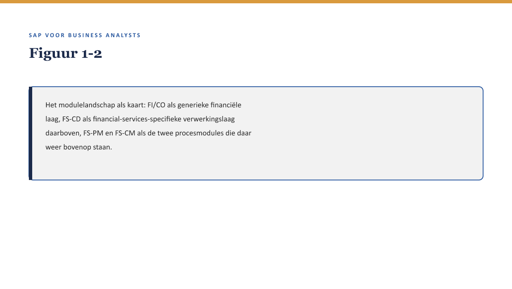

Deel 1 — De SAP-wereld in vogelvlucht
Reader · Niveau 1 Fundamenten · Cursus SAP voor Business Analysts · Ductus
Leerdoelen
Na dit deel kun je:
- het SAP-modulelandschap op hoofdlijnen benoemen en aanwijzen waar een BA er in de praktijk mee te maken krijgt;
- het verschil tussen ECC en S/4HANA uitleggen op het niveau dat een BA nodig heeft, zonder in technische migratiedetails te verzanden;
- de rol van de BA in een SAP-implementatietraject afbakenen ten opzichte van de functioneel consultant en de ontwikkelaar;
- beargumenteren waarom “ik ken het domein” en “ik ken het systeem” twee losse vaardigheden zijn die elkaar niet vervangen;
- de disclaimer-houding toepassen die door de hele cursus terugkeert: concepten zijn stabiel, exacte tcodes/tabellen/paden zijn dat niet.
Studielast: één dagdeel klassikaal, circa drie uur zelfstudie.
1. De vraag die niemand kon beantwoorden
Sanne Wolters werkt acht jaar bij Meridiaan Pensioen, de laatste vijf daarvan rond Panorama — het kernadministratiesysteem waarin alle polissen, premies en aanspraken van Meridiaans 4.100 aangesloten werkgevers worden vastgelegd. Zij kent het polisdomein tot in de details: welke productvariant in welk jaar is geïntroduceerd, welke uitzonderingsregel voor welke werkgever geldt, waarom de slapersregeling uit 2011 een eigen paragraaf in het handboek heeft.
Op een dinsdagmiddag legt Rob Hendriks, manager IT-delivery, haar een vraag voor: “Hoeveel van onze 340 productvarianten passen binnen standaard SAP FS-PM, en hoeveel vergen maatwerk?” Meridiaan overweegt Panorama te vervangen door SAP FS-PM — onder meer omdat elke aanpassing nu via externe bouwpartner Vestara IT loopt, met lange doorlooptijden en geen zicht op de broncode.
Sanne kan de vraag niet beantwoorden. Niet omdat zij het antwoord niet weet — zij kent elke variant — maar omdat zij niet weet wat “standaard SAP FS-PM” precies inhoudt, en dus niet kan vergelijken.

Dat is het punt waarop deze cursus begint, en het is een ander startpunt dan je in veel SAP-trainingen tegenkomt. Deze cursus leert je niet SAP configureren. Hij leert je wat je moet kunnen lezen en vragen om een domein dat je al kent — het jouwe — te kunnen vertalen naar en toetsen tegen een systeem dat je nog niet kent.
2. Waarom dit voor de BA telt
Een terugkerend kader door de hele cursus. Elk deel bevat er minstens één: niet wat het systeem doet, maar wat jij er als BA mee moet kunnen.
Waarom dit voor de BA telt. Je hoeft geen SAP-consultant te worden. Je moet wél zelfstandig kunnen beoordelen of wat een consultant je voorstelt, aansluit bij wat de organisatie nodig heeft — en dat kun je alleen als je genoeg van het systeem begrijpt om een goede vraag te stellen. Een BA die niets van SAP begrijpt, is afhankelijk van de welwillendheid van de consultant die het uitlegt. Priya Chandra, de FS-PM-consultant die Meridiaan inhuurt, is deskundig en te vertrouwen — en dat betekent niet dat Sanne haar niet moet kunnen tegenspreken.
3. Het modulelandschap in vogelvlucht
3.1 Wat “een module” in SAP betekent
SAP is geen enkel programma maar een verzameling samenhangende toepassingsgebieden, historisch “modules” genoemd (in S/4HANA vaker “componenten” of “solution areas”, maar het begrip modulelandschap blijft bruikbaar als mentaal kaartje). Voor een BA bij een verzekeraar zijn een handvol daarvan direct relevant:
- FI (Financial Accounting) — de financiële boekhouding: grootboek, debiteuren, crediteuren.
- CO (Controlling) — interne kostenbewaking en -toerekening.
- FS-CD (Collections & Disbursements) — de inningen-en-uitbetalingenmotor voor de financiële sector; verwerkt premie-incasso en schade-uitkeringen op een schaal en met een frequentie die generieke FI niet aankan.
- FS-PM (Policy Management) — polisadministratie: het onderwerp van de capstone in deel 11-12, en de kern van Meridiaans vervangingstraject.
- FS-CM (Claims Management) — schadeafhandeling; komt uitgebreid aan bod in niveau 2, deel 13-14, omdat Meridiaan dit voor het eerst in-house gaat inrichten.

Onthoud de vorm van deze kaart, niet elk detail: generieke financiële basis onderin, een sectorspecifieke verwerkingslaag daarboven, en de procesmodules die de dagelijkse praktijk van de organisatie dragen aan de top. Elke keer dat je in latere delen een nieuw onderdeel tegenkomt, kun je vragen: op welke laag zit dit, en wat staat eronder waar het van afhankelijk is?
3.2 Waar Meridiaan in deze kaart staat
Panorama dekt vandaag ruwweg wat FS-PM en een deel van FS-CD zouden dekken, in één gesloten systeem zonder de gelaagdheid hierboven. Het vervangingstraject splitst die éne doos in de lagen die de kaart laat zien — met als expliciet gevolg dat dingen die in Panorama “gewoon werkten” omdat ze in één systeem zaten, straks over een koppelvlak tussen lagen moeten lopen. Dat is geen nadeel op zich, maar het is wél iets waar een BA alert op moet zijn: een koppelvlak is een plek waar iets kan verdwijnen dat vroeger vanzelfsprekend was.
Kernzin — Een monolithisch systeem lost integratieproblemen op door ze niet te hebben. Zodra je het opsplitst in lagen, moet je die integratie expliciet ontwerpen — en alles wat vroeger “vanzelfsprekend werkte” wordt nu een vraag die iemand moet beantwoorden.
4. ECC en S/4HANA — wat een BA hierover moet weten
4.1 Twee generaties, niet twee producten
ECC (ERP Central Component) is de vorige generatie van SAP’s kernsysteem, in gebruik bij een groot deel van de bestaande installaties wereldwijd. S/4HANA is de huidige generatie, gebouwd op een andere onderliggende database-technologie (HANA, in-memory) en met een vernieuwd datamodel — het bekendste voorbeeld is de Universal Journal, waarin financiële boekingen op één plek samenkomen in plaats van verspreid over losse tabellen (deel 15 gaat hier dieper op in).
Voor een BA is het verschil niet in de eerste plaats technisch. Het zit in twee dingen:
- De gebruikersinterface. ECC draait doorgaans op de klassieke SAP GUI (schermen met transactiecodes); S/4HANA introduceert Fiori, een webgebaseerde interface met apps per taak. In de praktijk draaien veel S/4HANA-omgevingen nog een deel GUI naast Fiori — verwacht geen harde knip.
- Het datamodel onder de motorkap, wat in de praktijk vooral zichtbaar wordt in rapportage en in hoe snel een query loopt — relevant voor deel 8 (rapportage) en deel 15 (financiële schaduw).
4.2 Waarom dit voor Meridiaan meteen relevant is
Meridiaans keuze voor FS-PM speelt zich af tegen de achtergrond van SAP’s eigen koers: FS-PM leeft door binnen S/4HANA als Policy Management in S/4HANA, niet als een aflopend product zonder opvolger. Dat betekent twee dingen die door de hele cursus terugkomen:
- de conceptuele kern van FS-PM (het BTX-model, de productlogica — zie deel 11-12) is stabiel genoeg om nu te leren, ook al gaat Meridiaan mogelijk pas later daadwerkelijk naar S/4HANA;
- wat wél verandert bij die overstap — specifiek voor Policy Management — is geen bijzaak om ergens later te ontdekken, maar krijgt in deel 23 een eigen behandeling, juist omdat het voor een lopend implementatietraject relevant wordt zodra de S/4HANA-vraag concreet wordt.
4.3 De disclaimer als methode
Dit is de eerste keer dat je het vaste anker van deze cursus tegenkomt, en het komt in elk volgend deel terug:
Concepten zijn stabiel. Transactiecodes, tabelnamen en menupaden zijn dat niet — die verschillen per release (ECC vs. S/4HANA) en per implementatie. Wat je in deze cursus leert over hoe een polisproces of een boekingsketen in elkaar zit, blijft grotendeels overeind bij een systeemwissel. Het exacte scherm waarop je iets terugvindt, verifieer je altijd in je eigen systeem.
Dit is geen voorzichtigheidsformule om verantwoordelijkheid af te schuiven. Het is een praktische vaardigheid: leren welk deel van wat je ziet een concept is (blijft relevant) en welk deel een implementatiedetail is (verandert, en dat is prima). Een BA die dat onderscheid niet maakt, wordt bij elke systeemupdate opnieuw onzeker over kennis die eigenlijk nog klopte.
5. Waar de BA staat — en waar niet
5.1 Drie rollen, drie verantwoordelijkheden
| Rol | Verantwoordelijkheid | Voorbeeld uit het Panorama-traject |
|---|---|---|
| Business analist (Sanne) | Vertaalt organisatiebehoefte naar functionele eisen; toetst of een voorstel aansluit bij het domein; stelt vast wat een uitzondering is en waarom | Beoordeelt of de slapersregeling uit 2011 in standaard FS-PM past of maatwerk vergt |
| Functioneel consultant (Priya Chandra) | Kent het systeem, vertaalt functionele eisen naar configuratie (customizing), adviseert over standaard versus maatwerk | Stelt voor welke FS-PM-productconfiguratie het dichtst bij Meridiaans bestaande varianten komt |
| Ontwikkelaar (Jelle Bakker) | Bouwt wat configuratie niet kan: custom code, uitbreidingen, interfaces | Bouwt een uitbreiding voor de uitzonderingsregels die geen standaardconfiguratie dekt |

Deze grens is nooit absoluut scherp — deel 6 gaat uitgebreid in op het grensgebied tussen customizing en development — maar het startpunt is wel scherp: de BA stelt niet de systeemvraag, hij stelt de organisatievraag. “Past dit in standaard FS-PM?” is een vraag voor Priya. “Is deze uitzonderingsregel nog nodig, of was hij dertien jaar geleden bedacht voor een situatie die niet meer bestaat?” is een vraag voor Sanne — en die tweede vraag stelt niemand als de BA hem niet stelt.
5.2 Kennen versus kunnen lezen
Kernzin — Het domein kennen en het systeem kunnen lezen zijn twee aparte vaardigheden. Wie alleen het domein kent, kan een eis formuleren maar niet toetsen of hij haalbaar is. Wie alleen het systeem kent, kan iets bouwen dat werkt en toch het verkeerde probleem oplost.
Sanne is het spiegelbeeld van een veelvoorkomend probleem in SAP-trajecten: een BA die wél de systeemtaal spreekt maar het domein niet kent, en daardoor eisen accepteert die technisch correct zijn en functioneel misplaatst. Priya kent het systeem, niet het domein — dat is precies waarom haar aanwezigheid Sanne niet overbodig maakt, maar juist nodig.
6. Wat deze cursus wél en niet leert
Om verwachtingen scherp te zetten, voordat je aan deel 2 begint:
Wel: genoeg lezen van tabellen, logica, integratiepatronen en projectstructuur om een SAP-voorstel te kunnen beoordelen, een goede vraag te stellen, en een requirement te schrijven die een consultant daadwerkelijk kan configureren.
Niet: zelf configureren, programmeren, of een SAP-systeem beheren. Waar de reader “ABAP lezen” (deel 5) of “customizing” (deel 6) behandelt, is het doel herkennen en beoordelen — niet uitvoeren.
Dit onderscheid voorkomt een veelgemaakte fout: een BA die na deze cursus denkt dat hij kan configureren, is gevaarlijker dan een BA die weet dat hij dat niet kan en het gesprek daarover aangaat met de consultant.
7. Kruisverwijzingen
- ↗ Requirementsmanagement: hoe je een eis schrijft die een consultant kan configureren komt in deel 9 uitgebreid terug.
- ↗ Enterprise Integration Patterns: het koppelvlak tussen de lagen uit §3.2 wordt in deel 7 een eigen onderwerp.
- ↗ Testen en Kwaliteitsborging: dezelfde Meridiaan-organisatie, ander traject, rond dezelfde tijd — zie de casusdossier-aanvulling voor hoe deze twee zich tot elkaar verhouden.
Kernbegrippen
modulelandschap · FI/CO · FS-CD · FS-PM · FS-CM · ECC · S/4HANA · Fiori · Universal Journal · customizing versus development · business analist versus functioneel consultant
Samenvatting in vijf zinnen
- SAP is een gelaagd modulelandschap: een generieke financiële basis, een sectorspecifieke verwerkingslaag (FS-CD), en de procesmodules FS-PM en FS-CM daarboven.
- ECC en S/4HANA zijn twee generaties van hetzelfde kernsysteem; voor een BA telt vooral het verschil in interface (GUI/Fiori) en datamodel, niet de volledige technische migratie.
- Concepten in dit vak zijn stabiel; transactiecodes, tabellen en paden verschillen per release en implementatie — dat onderscheid maken is een vaardigheid, geen voetnoot.
- De BA stelt de organisatievraag, de consultant de systeemvraag, de ontwikkelaar de bouwvraag — drie rollen die elkaar nodig hebben, niet vervangen.
- Het domein kennen en het systeem kunnen lezen zijn twee losse vaardigheden; deze cursus leert het tweede aan iemand die het eerste al heeft.